Lot O37 : les quatre parcours de démonstration sous leur nom de parcours, sans nom technique ni lieu « Fictif », dans la liste des parcours puis sur l'écran Prêt de chacun (captures à valider par le propriétaire ; `captures_demo.py` les rassemble).
OK démarrage du core : « Core démarré »
OK engine relié au core : hello_ack
OK qualité réellement appliquée au départ : low appliquée (fin du journal) ; dernière ligne : low (demandée low, source cli)
OK rendu du jeu (Forward+) au départ : Vulkan, Forward+
OK engine prêt (première réponse à menu_state) : 0.4 s
OK écran contents (contient=['Contenus de départ — installé']) : « Contenus »
OK écran settings (focus='contents') : « Réglages »
OK choisir « world » : écran « routes », focus « demo »
OK écran routes (titre='Parcours', contient=['Col du lacet', 'Tour des six paysages', 'Route de la côte', 'Montée alpine'], elements=['demo', 'demo-biomes-tour', 'demo-biomes-cote', 'demo-biomes-alpin']) : « Parcours »
OK choisir « demo » : écran « home », focus « world »
OK écran home (contient=['Parcours : Col du lacet']) : « OpenRide »
OK choisir « world » : écran « routes », focus « demo-biomes-alpin »
OK écran routes : « Parcours »
OK qualité réellement appliquée à l'arrêt : low appliquée (fin du journal) ; dernière ligne : low (demandée low, source cli)
OK rendu du jeu (Forward+) à l'arrêt : Vulkan, Forward+
OK arrêt du core : code de sortie 0
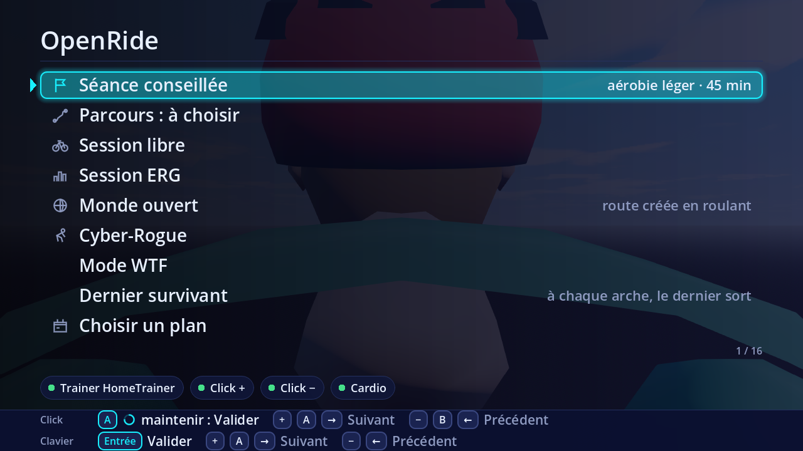
home : écran home, « OpenRide »
Séance conseillée — aérobie léger · 45 min | Parcours : à choisir | Session libre | Session ERG | Monde ouvert — route créée en roulant | Cyber-Rogue | Mode WTF | Dernier survivant — à chaque arche, le dernier sort | Choisir un plan
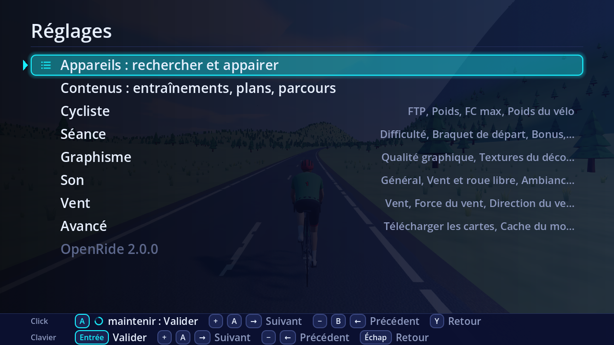
settings : écran settings, « Réglages »
Appareils : rechercher et appairer | Contenus : entraînements, plans, parcours | Cycliste — FTP, Poids, FC max, Poids du vélo | Séance — Difficulté, Braquet de départ, Bonus, Niveau des bots, Gravel, Pilotage du trainer, Départ, Cadence de départ, Placement dans la roue, Abri derrière les véhicules, Survivant : adversaires, Survivant : écart des arches, Survivant : écart de niveau, Survivant : si éliminé, Conseil : objectif, Conseil : temps disponible | Graphisme — Qualité graphique, Textures du décor, Thème, Courbes de la séance, Mode d'affichage, Afficher les images/s, Jauge d'abri des bots, Vue de caméra, Biome du décor, Jour et nuit, Saisons, Décor vivant, Relief exagéré | Son — Général, Vent et roue libre, Ambiance, Bips et événements, Cyber-Rogue : bruitages, Cyber-Rogue : musique | Vent — Vent, Force du vent, Direction du vent, Rafales, Plafond du vent, Ressenti du vent | Avancé — Télécharger les cartes, Cache du monde, Place pour les thèmes, Progression et Garage | OpenRide 2.0.0
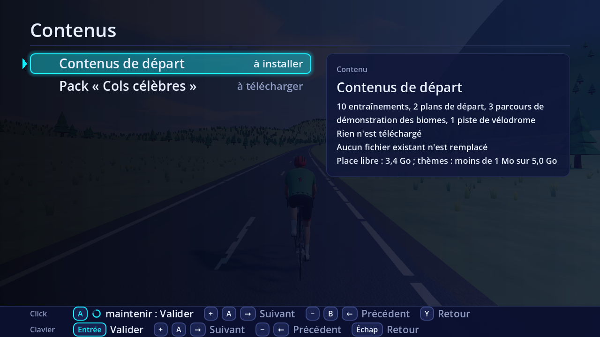
contents : écran contents, « Contenus »
Contenus de départ — à installer | Pack « Cols célèbres » — à télécharger
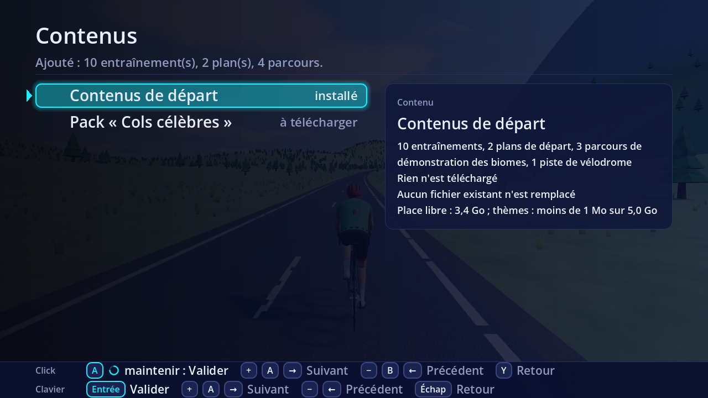
contents : écran contents, « Contenus »
Contenus de départ — installé | Pack « Cols célèbres » — à télécharger
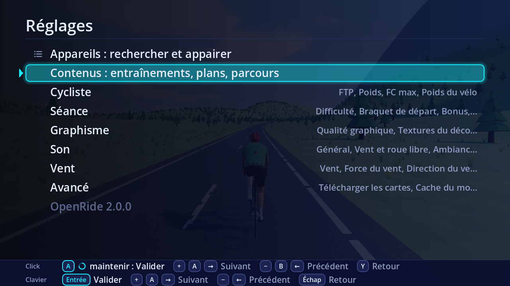
settings : écran settings, « Réglages »
Appareils : rechercher et appairer | Contenus : entraînements, plans, parcours | Cycliste — FTP, Poids, FC max, Poids du vélo | Séance — Difficulté, Braquet de départ, Bonus, Niveau des bots, Gravel, Pilotage du trainer, Départ, Cadence de départ, Placement dans la roue, Abri derrière les véhicules, Survivant : adversaires, Survivant : écart des arches, Survivant : écart de niveau, Survivant : si éliminé, Conseil : objectif, Conseil : temps disponible | Graphisme — Qualité graphique, Textures du décor, Thème, Courbes de la séance, Mode d'affichage, Afficher les images/s, Jauge d'abri des bots, Vue de caméra, Biome du décor, Jour et nuit, Saisons, Décor vivant, Relief exagéré | Son — Général, Vent et roue libre, Ambiance, Bips et événements, Cyber-Rogue : bruitages, Cyber-Rogue : musique | Vent — Vent, Force du vent, Direction du vent, Rafales, Plafond du vent, Ressenti du vent | Avancé — Télécharger les cartes, Cache du monde, Place pour les thèmes, Progression et Garage | OpenRide 2.0.0
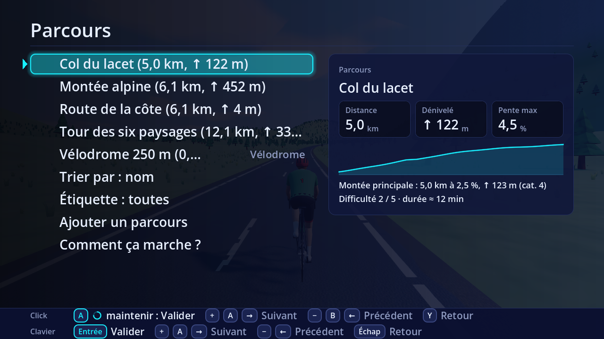
routes : écran routes, « Parcours »
Col du lacet (5,0 km, ↑ 122 m) | Montée alpine (6,1 km, ↑ 452 m) | Route de la côte (6,1 km, ↑ 4 m) | Tour des six paysages (12,1 km, ↑ 333 m) | Vélodrome 250 m (0,2 km, ↑ 0 m, boucle) — Vélodrome | Trier par : nom | Étiquette : toutes | Ajouter un parcours | Comment ça marche ?parcours_liste : écran routes, « Parcours »
Col du lacet (5,0 km, ↑ 122 m) | Montée alpine (6,1 km, ↑ 452 m) | Route de la côte (6,1 km, ↑ 4 m) | Tour des six paysages (12,1 km, ↑ 333 m) | Vélodrome 250 m (0,2 km, ↑ 0 m, boucle) — Vélodrome | Trier par : nom | Étiquette : toutes | Ajouter un parcours | Comment ça marche ?
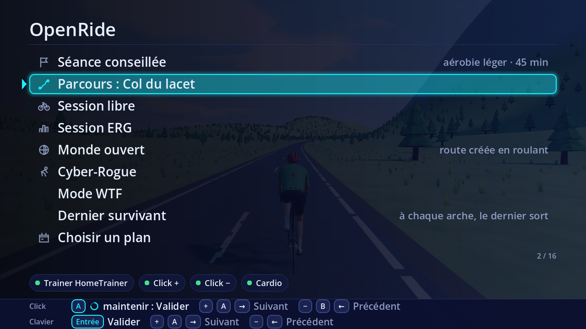
home : écran home, « OpenRide »
Séance conseillée — aérobie léger · 45 min | Parcours : Col du lacet | Session libre | Session ERG | Monde ouvert — route créée en roulant | Cyber-Rogue | Mode WTF | Dernier survivant — à chaque arche, le dernier sort | Choisir un plan
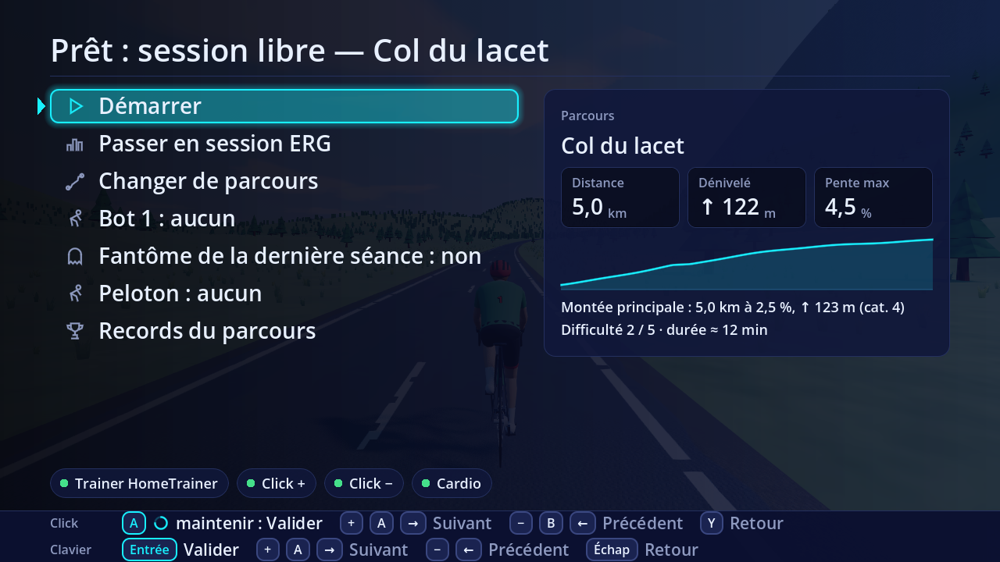
ready : écran ready, « Prêt : session libre — Col du lacet »
Démarrer | Passer en session ERG | Changer de parcours | Bot 1 : aucun | Fantôme de la dernière séance : non | Peloton : aucun | Records du parcourspret_demo : écran ready, « Prêt : session libre — Col du lacet »
Démarrer | Passer en session ERG | Changer de parcours | Bot 1 : aucun | Fantôme de la dernière séance : non | Peloton : aucun | Records du parcours
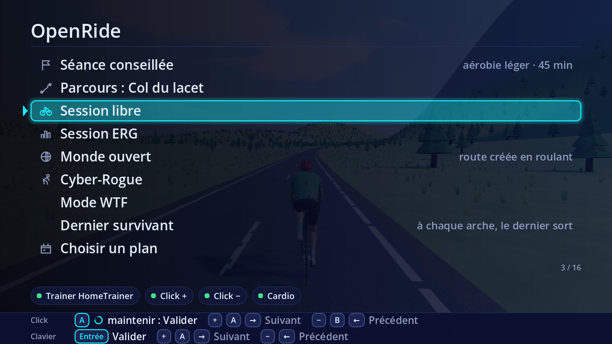
home : écran home, « OpenRide »
Séance conseillée — aérobie léger · 45 min | Parcours : Col du lacet | Session libre | Session ERG | Monde ouvert — route créée en roulant | Cyber-Rogue | Mode WTF | Dernier survivant — à chaque arche, le dernier sort | Choisir un planroutes : écran routes, « Parcours »
Col du lacet (5,0 km, ↑ 122 m) | Montée alpine (6,1 km, ↑ 452 m) | Route de la côte (6,1 km, ↑ 4 m) | Tour des six paysages (12,1 km, ↑ 333 m) | Vélodrome 250 m (0,2 km, ↑ 0 m, boucle) — Vélodrome | Trier par : nom | Étiquette : toutes | Ajouter un parcours | Comment ça marche ?
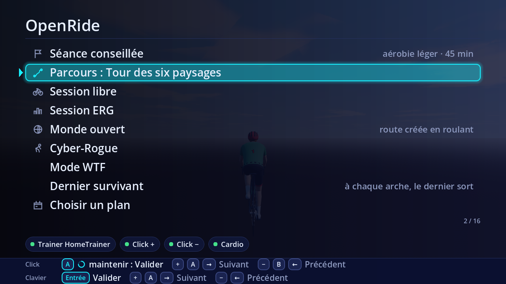
home : écran home, « OpenRide »
Séance conseillée — aérobie léger · 45 min | Parcours : Tour des six paysages | Session libre | Session ERG | Monde ouvert — route créée en roulant | Cyber-Rogue | Mode WTF | Dernier survivant — à chaque arche, le dernier sort | Choisir un plan
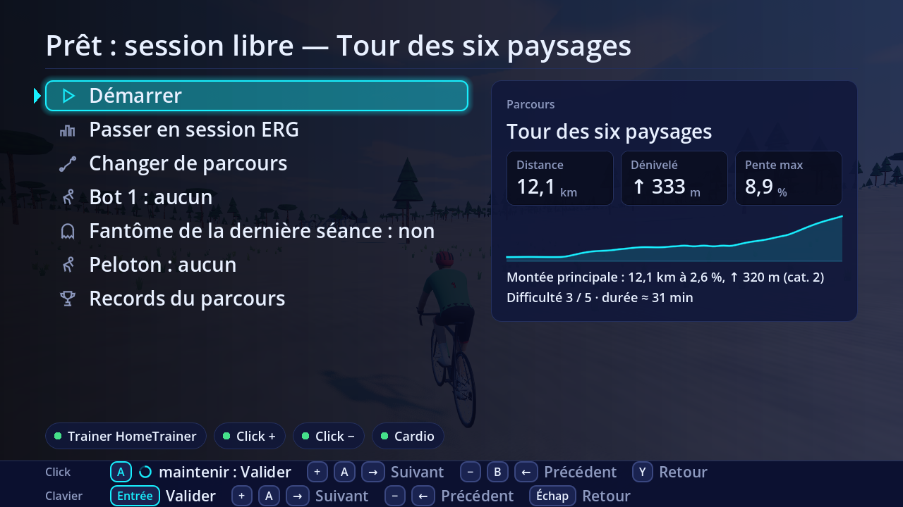
ready : écran ready, « Prêt : session libre — Tour des six paysages »
Démarrer | Passer en session ERG | Changer de parcours | Bot 1 : aucun | Fantôme de la dernière séance : non | Peloton : aucun | Records du parcours
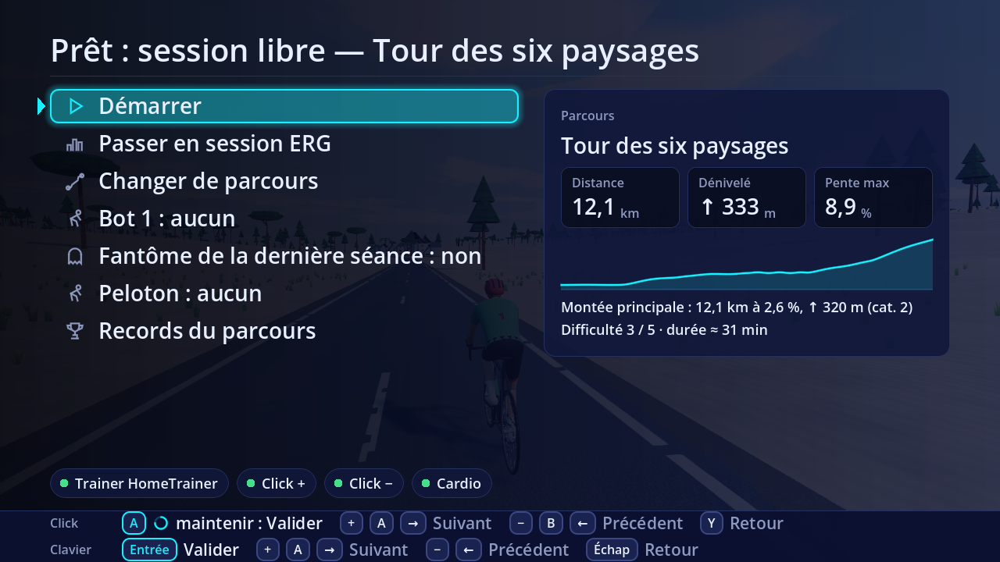
pret_demo-biomes-tour : écran ready, « Prêt : session libre — Tour des six paysages »
Démarrer | Passer en session ERG | Changer de parcours | Bot 1 : aucun | Fantôme de la dernière séance : non | Peloton : aucun | Records du parcours
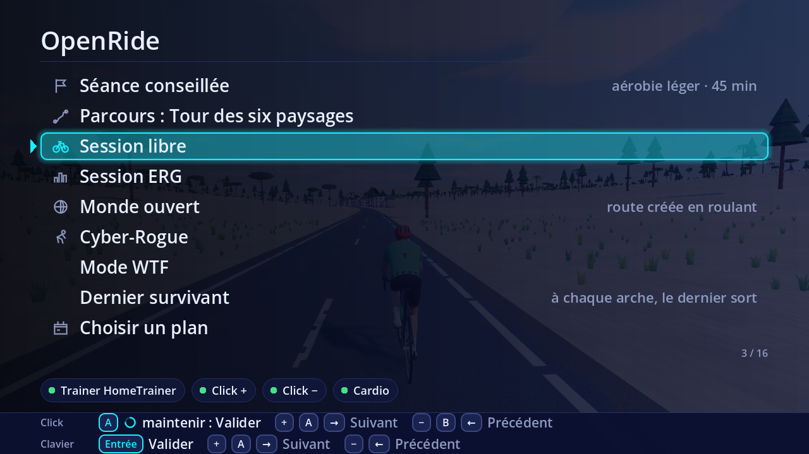
home : écran home, « OpenRide »
Séance conseillée — aérobie léger · 45 min | Parcours : Tour des six paysages | Session libre | Session ERG | Monde ouvert — route créée en roulant | Cyber-Rogue | Mode WTF | Dernier survivant — à chaque arche, le dernier sort | Choisir un plan
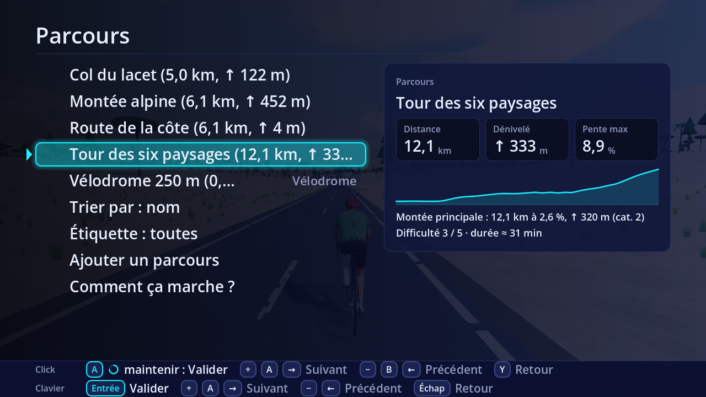
routes : écran routes, « Parcours »
Col du lacet (5,0 km, ↑ 122 m) | Montée alpine (6,1 km, ↑ 452 m) | Route de la côte (6,1 km, ↑ 4 m) | Tour des six paysages (12,1 km, ↑ 333 m) | Vélodrome 250 m (0,2 km, ↑ 0 m, boucle) — Vélodrome | Trier par : nom | Étiquette : toutes | Ajouter un parcours | Comment ça marche ?
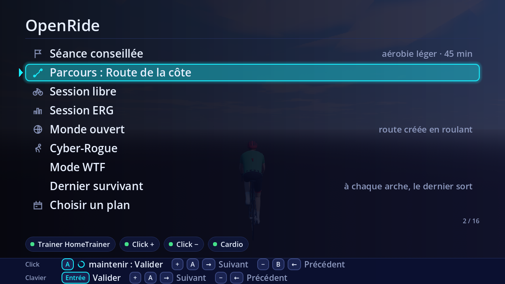
home : écran home, « OpenRide »
Séance conseillée — aérobie léger · 45 min | Parcours : Route de la côte | Session libre | Session ERG | Monde ouvert — route créée en roulant | Cyber-Rogue | Mode WTF | Dernier survivant — à chaque arche, le dernier sort | Choisir un plan
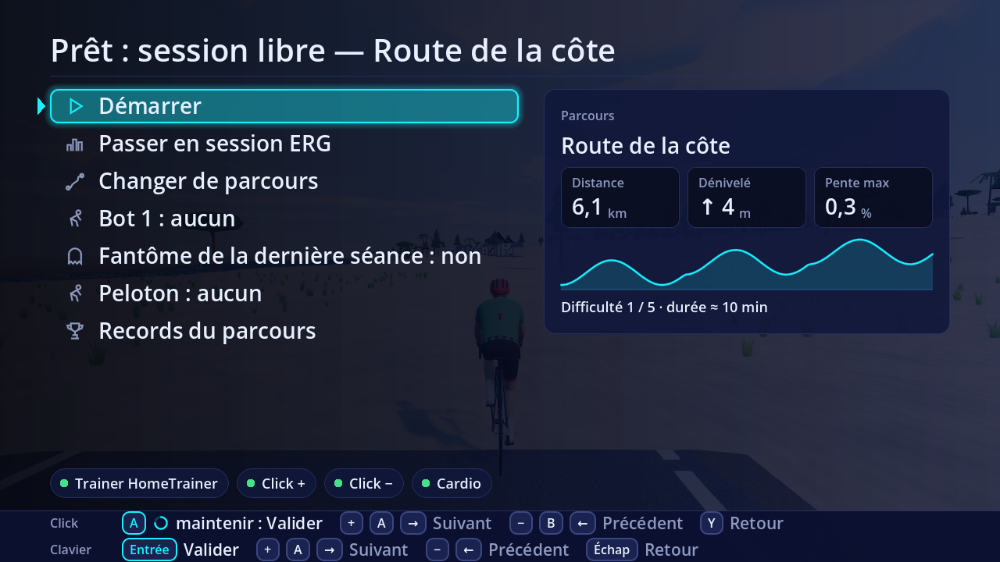
ready : écran ready, « Prêt : session libre — Route de la côte »
Démarrer | Passer en session ERG | Changer de parcours | Bot 1 : aucun | Fantôme de la dernière séance : non | Peloton : aucun | Records du parcours
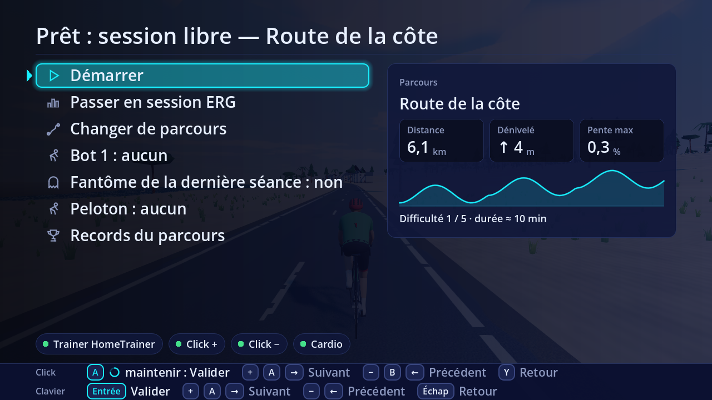
pret_demo-biomes-cote : écran ready, « Prêt : session libre — Route de la côte »
Démarrer | Passer en session ERG | Changer de parcours | Bot 1 : aucun | Fantôme de la dernière séance : non | Peloton : aucun | Records du parcours
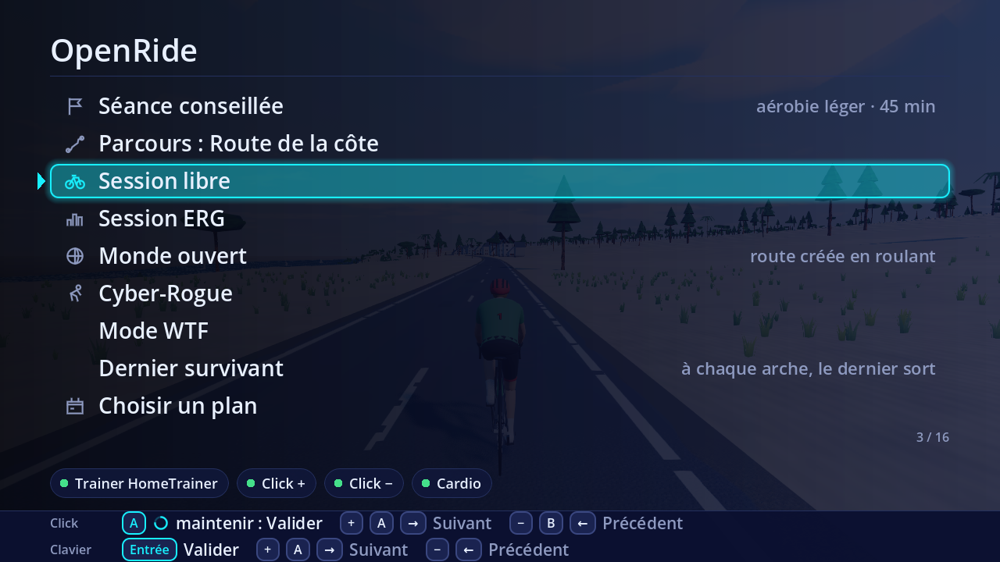
home : écran home, « OpenRide »
Séance conseillée — aérobie léger · 45 min | Parcours : Route de la côte | Session libre | Session ERG | Monde ouvert — route créée en roulant | Cyber-Rogue | Mode WTF | Dernier survivant — à chaque arche, le dernier sort | Choisir un plan
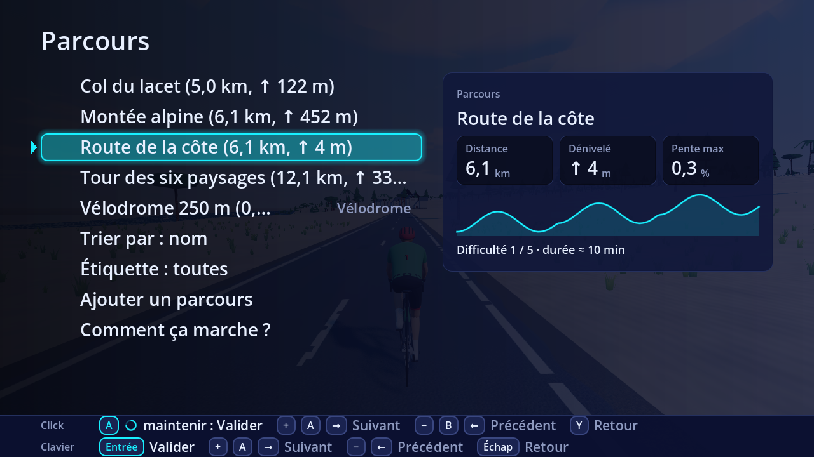
routes : écran routes, « Parcours »
Col du lacet (5,0 km, ↑ 122 m) | Montée alpine (6,1 km, ↑ 452 m) | Route de la côte (6,1 km, ↑ 4 m) | Tour des six paysages (12,1 km, ↑ 333 m) | Vélodrome 250 m (0,2 km, ↑ 0 m, boucle) — Vélodrome | Trier par : nom | Étiquette : toutes | Ajouter un parcours | Comment ça marche ?
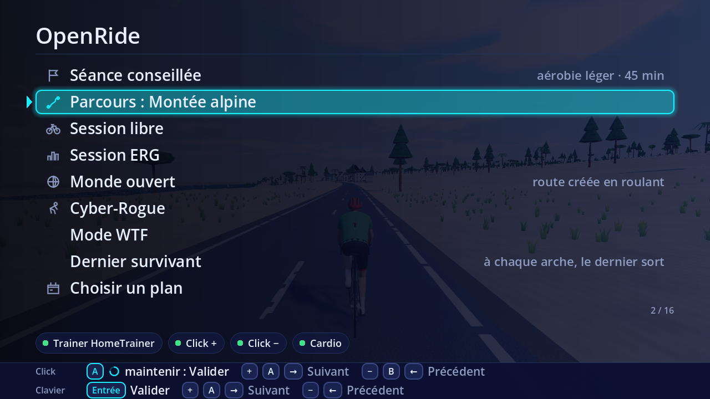
home : écran home, « OpenRide »
Séance conseillée — aérobie léger · 45 min | Parcours : Montée alpine | Session libre | Session ERG | Monde ouvert — route créée en roulant | Cyber-Rogue | Mode WTF | Dernier survivant — à chaque arche, le dernier sort | Choisir un plan
Démarrer | Passer en session ERG | Changer de parcours | Bot 1 : aucun | Fantôme de la dernière séance : non | Peloton : aucun | Records du parcours
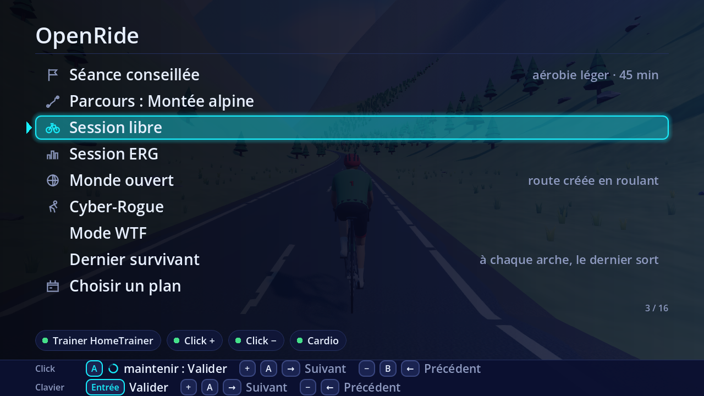
home : écran home, « OpenRide »
Séance conseillée — aérobie léger · 45 min | Parcours : Montée alpine | Session libre | Session ERG | Monde ouvert — route créée en roulant | Cyber-Rogue | Mode WTF | Dernier survivant — à chaque arche, le dernier sort | Choisir un plan
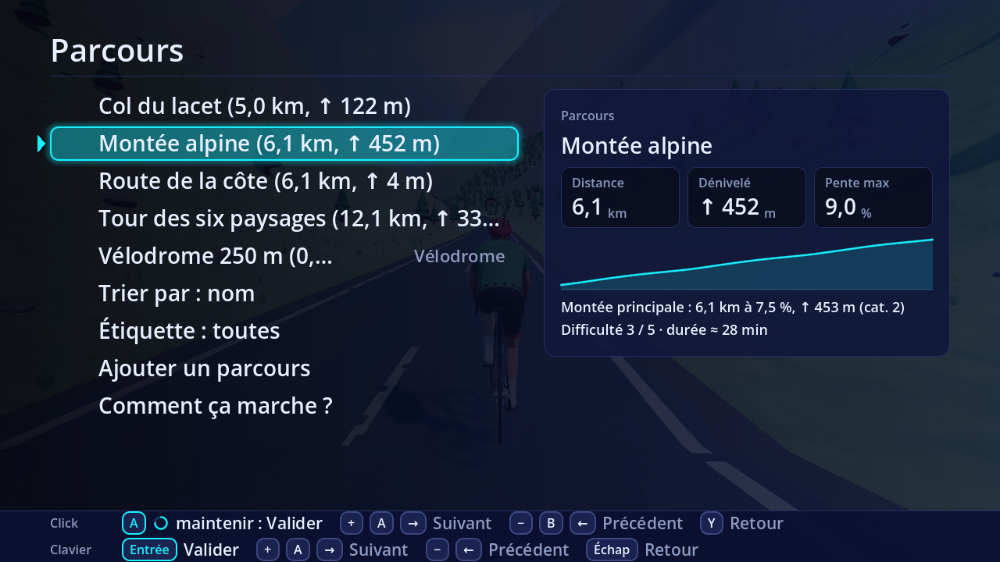
routes : écran routes, « Parcours »
Col du lacet (5,0 km, ↑ 122 m) | Montée alpine (6,1 km, ↑ 452 m) | Route de la côte (6,1 km, ↑ 4 m) | Tour des six paysages (12,1 km, ↑ 333 m) | Vélodrome 250 m (0,2 km, ↑ 0 m, boucle) — Vélodrome | Trier par : nom | Étiquette : toutes | Ajouter un parcours | Comment ça marche ?